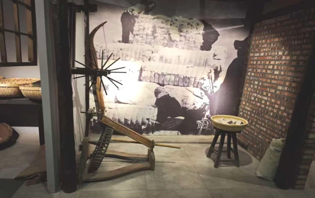

辽宁 · 大连 · 庄河 乡土观察计划
把分散的文化点位，串成一次体验
在庄河，
沿着一颗草莓
读懂乡土。
从农具的旧时光，到田野里的新日常。
让一次发现，连起土地、劳动与生活。
4 个主题场景 · 1 本旅行手账可随时开启的线上文化体验
FIELD NOTES / ZHUANGHE乡
遇
遇
03 / 04一颗红颜，
一颗红颜，
一方水土。
从前期实践影像里，发现庄河。

故事的起点农耕记忆让器物重新连接生活
01 / 一线串起乡土
选一条线，慢慢认识这里。
每一站，都是理解庄河的一个入口。
按你的兴趣，开启这段线上旅程。
本次体验路线
02 / 打开乡土点位册
值得停留的，不止是风景。
换个词，再遇见一段故事。
试试“农具”“草莓”或“田野”，也可以查看全部点位。
03 / 留一点乡土在心里
把发现，
写成自己的记忆。
读完一个故事，完成一个小任务，
就收下一枚属于这一站的印记。
0/ 4
个主题已探索
个主题已探索
手账保存在当前浏览器中，供你自己留念。
我的庄河手记
仅保存在本机
印记记录线上探索进度。
04 / 带着了解再出发
去田野之前，做好这些准备。
故事与影像整理自前期庄河实践材料。
场景开放与接待信息，请在出行前向相关方确认。